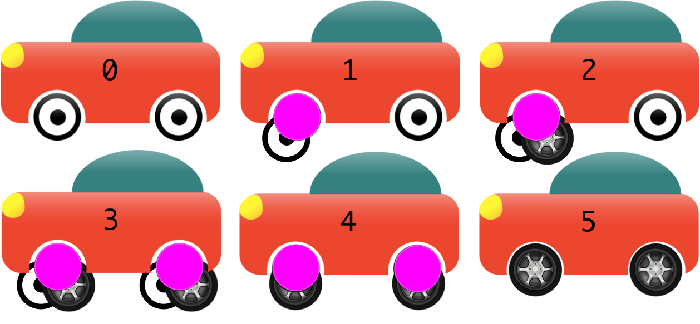

Ветвление по абстракции
Ветвление по абстракции это комплексная техника, которая влияет на параметр ‘время вливания написанного кода’ в trunk. Допустим, у разработчика (или пары разработчиков, если мы говорим про парное программирование), есть какая-то задача, выполнение которой займет 5 дней. В таком случчае, будет не очень удобно создавать ветку для такой большой задачи, т.к. где-то в основной ветке может быть баг или не очень хороший код, который будет исправлен в этой задаче, и это код будет доставлять неудобства остальным разработчикам 5 дней, пока делается задача. Дополнительные неудобства также могут возникнуть при вливании этого кода в trunk.
Также могут возникнуть различные дублирующиеся действия, например написание дублирующего кода, что может увеличить сроки выполнения задачи и/или затраты ресурсов. Как бы то ни было, такое действие по определению является затратным по времени, сложным, дестабилизирующим/разрушительным для всех в команде разработки.
Правила:
- У нас есть разработчики, которые зависят от ‘времени вливания написанного кода’, и мы ни в коем случае не хотим тормозить этим параметром их работу.
- Ни одно изменение кода, которое было отправлено в общий репозиторий, не должно ставить под угрозу возможность запуска кода иои готовность к релизу.
Идеальные шаги
Для простоты предположим, что есть код, который ‘существовал и был переписан’, и код, который ‘был написан с нуля’.
- Напишите абстракцию вокруг кода, который необходимо заменить, и отправьте ее в общий репозиторий для того, чтобы все могли ее видеть. Если необходимо, сделайте это в несколько коммитов. Ни один из этих коммитов не должен ломать сборку, и все они могут быть отправлены в общий репозиторий по порядку и по готовности.
- Напишите вторую реализацию абстракции для кода, который был написан ранее, и также отправьте в общий репозиторий, но вам лучше написать эту реализацию таким образом, чтобы она была “выключена” и не влияла на работу других разработчиков в команде. При необходимости это может занять несколько коммитов, как указано выше. Абстракция из №1 также может иногда изменяться, но должна следовать тому же правилу - не ломать сборку.
- “Включите” написанную вами реализацию для остальной части команды и сделайте commit/push этого кода.
- Удалите заменяемую реализацию.
- Удалите абстракцию.
Надеюсь, ваша команда использует среду IDE, которая может выполнять сложные рефакторинги для наборов проверок таким образом, чтобы запуск сборки после каждого из них был простой проверкой рефакторингов.
Надуманный пример
Давайте поговорим о машине, у которой модернизировали колеса. Мы никогда не должны забывать, что программная инженерия - это не что иное, как обычное строительство, и я хочу обратить на это ваше внимание. По крайней мере, это не что иное, как обычное строительство, в котором речь не идет о производственной линии.
Правила
- Механики должны уметь одновременно работать с обивкой, двигателем и т.д.
- Автомобиль должен сохранять работоспособность после каждого внесения изменений.
Шаги
Все шаги эффективно выполняются на домкратах/подъемниках/пандусах перед тем, как снова опустить автомобиль на землю.
- Одно колесо снимается и помещается в контейнер, который по функционалу является таким же колесом (вращается вокруг оси и выдерживает вес автомобиля), затем этот контейнер вставляется на место снятого колеса. При вождении этот контейнер функционирует так же, как и остальные три колеса.
- Колесоподобный контейнер содержит также второе колесо, которое мы хотели бы иметь в конечном счете, в точно таком же физическом пространстве (волшебным образом). Внутри автомобиля добавлен переключатель, чтобы можно было удобно переключать колеса - но это, наверное, лучше делать перед запуском двигателя.
- Повторите пп.1-2 для остальных трех колес. Или можно для всех колес поочередно сделать п.1, а потом п.2. Опыт механиков подскажет, что из этого является наиболее эффективным.
- Если мы поняли что новые колеса лучше, то старые колеса извлекаются из колесных контейнеров и отправляются на переработку.
- Колесоподобные контейнеры также снимаются с новых колес, по одному или все четыре одновременно.
На любой стадии работ, если мы снимаем машину с домкрата/подъемника/пандуса, то она должна быть на ходу (метафора ‘готов к работе’).

We said ‘jacks’ above, because that’s what mechanics use in real life. Software, however, does not follow the rules of gravity, or many of the costs of actual construction. With an IDE for a glove, a single finger could reposition the car in 3D space to allow easy replacement of the wheels.
Пример из разработки ПО
Задокументированный случай - это CI-демон ThoughtWorks для Go. Они изменили библиотеку объектно-реляционного сопоставления (для персистентности), не замедляя при этом деятельность товарищей по команде (правило 1) и не ставя под угрозу работоспособность кода (правило 2).
Они планировали перейти от «iBatis» к «Hibernate» по целому ряду причин, на которых мы не будем подробно останавливаться.
Их действия:
- Написали абстракцию вокруг классов/компонентов, которые использовали iBatis напрямую, и убедились что все классы/компоненты, которые неявно ссылались на iBatis, виесто этого начали ссылаться на написанную абстракцию.
- Написали вторую реализацию абстракции, в которой ввели Hibernate в кодовую базу, при необходимости поправляя написанную абстракцию.
- Сделали небольшой коммит, который включал код с Hibernate для всех членов команды.
- Удалили iBatis, затем абстракцию, а затем и переключатель со старой реализации на новую.
Как это часто бывает, вы можете оставить абстракцию в проекте если у вас есть unit тесты - абстракция может служить для них прослойкой, которую можно подменить и написать на нее тесты.
Вторичные преимущества
Очень дешевая возможность приостановить и возобновить работу по “миграции” одной реализации на другую
Переезд со старой реализации на новую может быть приостановлен и возобновлен позже в любой удобный момент. Это потому что сборка защищает вторую реализацию, которая не завершена. Это происходит достаточно просто из-за стадии компиляции, которая превращает абстракцию в объектный код где-то между первой и второй реализацией. Если есть unit тесты для этих двух реализаций, то жить становится еще проще.
Если говорить про реальную работу, то у нас нет возможности возобновить приостановленную работу в удобный момент. Возможно экспоненциальное увеличение стоимости перезапуска работы если учитывать время, которое прошло с момента приостановки работы.
Пауза и возобновление гораздо более вероятны в большой организации, занимающейся разработкой ПО, у которой нет безграничных запасов.
Отмена изменений по-прежнему дешевая
В случае отказа от новой реализации, удаление долгоживущей ветки, в которой выполнялась работа над новым функционалом, обходится дешевле, но метод удаления ветки по абстракции чего-либо дорожает не сразу, а последовательно.
Это не панацея
Ветвление по абстрации подходит не для всех ситуаций с “изменениями”.
Один из них это когда вам нужно поддерживать старые API и предыдущие релизы в течение очень короткого периода времени. Т.е. когда ваши зависимые клиенты (или отдельные клиентские приложения) могут иметь свой собственный момент обновления.
Несколько лет назад команда KDE обдумывала свою стратегию выпуска 5.0, но при этом хотела параллельно иметь возможность делать изменениям в 4.0, чтобы не вповторять предыдущих ошибок .
.
Some years ago the KDE team was mulling their release 5.0 strategy, and wanting to remain parallel to changes in 4.0, so as not to make
mistakes that they had done
previously. TODO: откатить назад.
Специальный сайт по этой теме
В начале 2018 года, был создан специальный сайт для дальнейшего изучения и продвижения этой концепции.
История
Команды использовали ветвление по абстракции задолго до того, как этот подход получил свое имя (Стейси Керл(Stacy Curl) упоминала про него в 2007 году), но когда была первая реализация - история про это умалчивает. Перед тем, как переходить на ветвление по абстракции, команды должны были сделать ветку для больших, длительных и ломающих изменений, или делать это с огромным количеством ухищрений типа:“Привет всем, возьмите отпуск на неделю пока мы тут ломаем код”.
С техникой втевления по абстракции, вероятность того, что команда откажется от Trunk-Based Development в пользу разработки в долгоживущих ветках, очень сильно снижается.
Внешние ссылки
show references